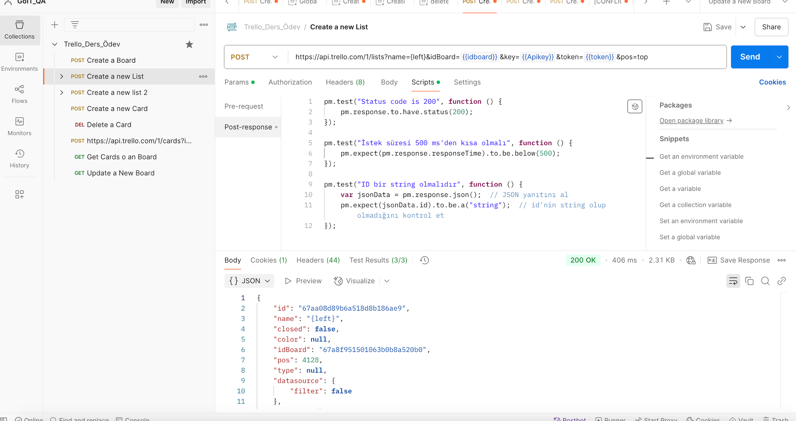

Görev 02
Panoda solda liste oluşturun
pos=top parametresi ile Left isimli listeyi panonun solunda oluşturma isteği.
İstek Bilgisi
Test Betiği
pm.test("Status code is 200", function () {
pm.response.to.have.status(200);
});
pm.test("İstek süresi 500 ms'den kısa olmalı", function () {
pm.expect(pm.response.responseTime).to.be.below(500);
});
pm.test("name bir string olmalıdir", function () {
var jsonData = pm.response.json();
pm.expect(jsonData.name).to.be.a("string");
});Yanıt Kanıtı
